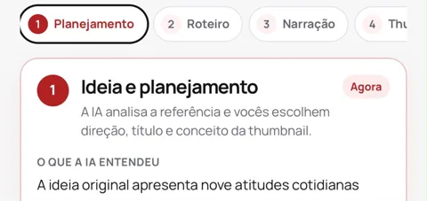
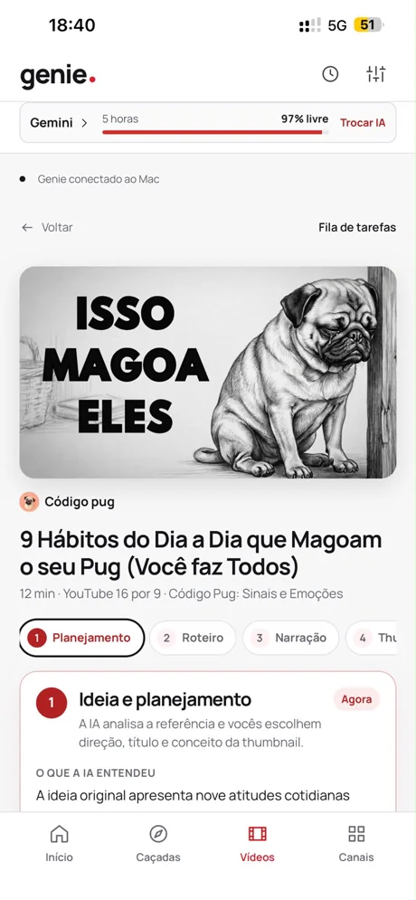
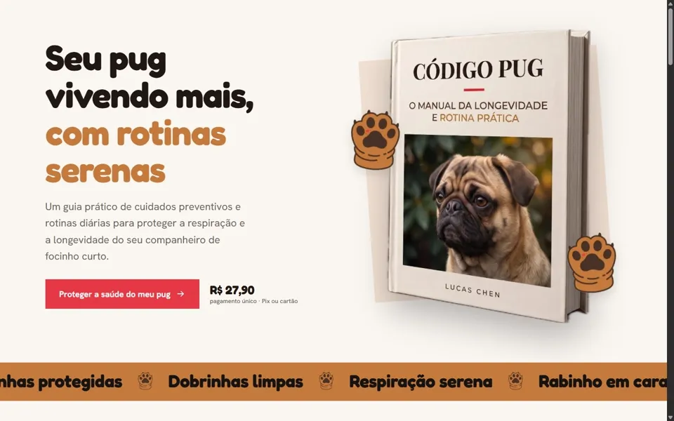
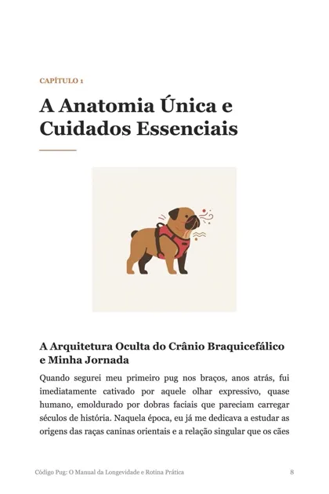
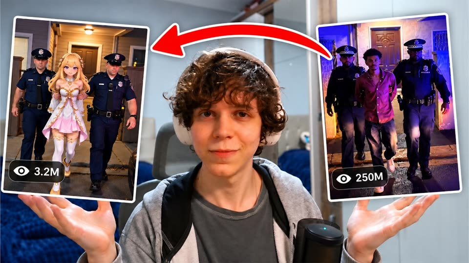

OS 0427Código Pug
- Pedido
- vídeo novo para o canal
- Referência
- vídeo viral sobre a rotina dos pugs
- Quem toca
- Genie + João
O quadro abaixo é real: o Genie, app que eu desenvolvi, pega uma ideia e entrega o vídeo pronto, com roteiro, narração, capa, ebook e página de vendas. Em palestras e workshops, mostro ao seu time como pôr a IA para tocar propostas, atendimento e relatórios.
OS 0427Código Pug
OS 0427tela real

A IA lê a referência e propõe título e conceito. Eu escolho.
OS 0427roteiro
9 Hábitos do Dia a Dia que Magoam o seu Pug (Você faz Todos)
OS 0427áudio
OS 0427capa
OS 0427pronto
Linha real: um vídeo do canal Código Pug feito pelo Genie, do pedido à entrega. Role a página e acompanhe a ordem andar.Arraste o quadro para o lado.
Pedido que vira proposta, cliente perguntando preço no WhatsApp, planilha que vira relatório de segunda-feira. É trabalho que passa de mão em mão sempre do mesmo jeito, e é exatamente esse o trabalho que a IA aprende a tocar.
Ficha de roteiro de processo
| Op. | Processo | Como costuma ser hoje | Onde a IA entra | Quem continua decidindo |
|---|---|---|---|---|
| 10 | Proposta comercial | O vendedor abre a última proposta, troca nome, item e preço e revisa tudo de novo. | A IA monta o rascunho a partir do pedido do cliente e da tabela de preços. | O vendedor confere valores e envia. |
| 20 | Atendimento no WhatsApp | As mesmas perguntas o dia inteiro: horário, prazo de entrega, se tem no estoque. | A IA responde o repetitivo e separa quem está pronto para comprar. | O atendente assume as conversas que pedem gente. |
| 30 | Relatório da semana | Alguém passa a sexta-feira juntando planilhas de três setores. | A IA junta os números, resume e aponta o que mudou desde a semana passada. | O gestor lê em cinco minutos e decide. |
| 40 | Conteúdo para as redes | O post sai quando sobra tempo. Ou seja, quase nunca. | A IA transforma o que a empresa já faz (obra entregue, safra, evento, produto novo) em posts e vídeos curtos. | O marketing aprova antes de publicar. |
| 50 | Treinamento de quem chega | O funcionário novo aprende perguntando para quem está ocupado. | A IA vira um manual que responde, montado com os procedimentos da própria empresa. | O responsável do setor valida o conteúdo. |
Obs. Exemplos de processos comuns em revendas, cooperativas, indústrias e escritórios de Toledo e região. Não são casos de clientes: são o ponto de partida da conversa.
Antes de ensinar IA para alguém, coloquei a IA para trabalhar nos meus próprios produtos. Está tudo publicado, com link.

Meu app que produz um canal inteiro: planeja, escreve o roteiro, narra, faz a thumbnail e monta o vídeo. Também escreve o ebook e a página de vendas. Roda conectado ao meu Mac e eu acompanho pelo celular.


Um canal, um ebook de 6 capítulos e uma página de vendas, todos saídos do Genie. O ebook está à venda por R$ 27,90.
Ver o site do Código PugJogos de verdade na Steam, feitos por uma pessoa com IA. Burnout Runs tem 125 carros, passe de 100 níveis e editor de pintura. E tem vídeo mostrando como fiz um jogo em 7 dias e lancei na Steam.
ignore não existe mais @ignorenaoexiste

Transformei vídeos virais em anúncios do meu jogo com IAProgramo com IA na frente da câmera, erro, conserto e mostro os números. É o mesmo jeito que eu conduzo um workshop.
Abrir o canal no YouTubeDo primeiro contato do time com IA até um processo rodando dentro da empresa. O valor depende do formato e do tamanho do grupo; a gente acerta pelo WhatsApp.
Cartão de ponto
19:0020:30
60 a 90 min · na empresa ou no evento
Para convenção de equipe, associação comercial, semana interna. Eu abro a IA ao vivo e faço trabalho de verdade na frente da plateia. Ninguém sai achando que é mágica, nem que é coisa para depois.
08:0012:00
3 a 4 h · cada um no seu computador
O time traz tarefas reais do próprio setor e sai usando IA nelas: a proposta, o atendimento, a planilha. Termina com cada pessoa tendo feito, não só assistido.
1ª visitano ar
sob medida · para donos e gestores
Escolhemos juntos um processo que pesa na rotina, eu desenho a linha com IA e coloco para funcionar dentro da empresa, com o time treinado para tocar.
1× / mêscontínuo
acompanhamento · presencial ou online
Para quem já começou e quer ir além: revisamos o que está rodando, ajustamos o que travou e escolhemos o próximo processo da fila.
Para donos e gestores
Demonstração ao vivo do Genie: uma ideia entra no começo da palestra e sai vídeo, capa e página de vendas no fim. No meio, a conversa que importa para o dono: o que dá para entregar à IA na sua empresa, quanto tempo isso libera e onde ainda precisa de gente.
Para times de marketing, vendas e atendimento
Mão na massa. Cada setor sai com os próprios modelos de pedido para a IA e um fluxo pronto para usar na segunda-feira.
Para todo mundo que vai usar
Uso responsável sem sermão: o que é dado sensível, por que a IA inventa com confiança e como conferir antes de mandar para o cliente.
IA dentro da empresa tem regra, igual máquina no chão de fábrica. Estas valem em toda palestra, workshop e implementação.
A IA escreve o rascunho; uma pessoa confere números, nomes e promessas antes de qualquer coisa sair para o cliente. IA erra com toda a confiança, e o time aprende a pegar esse erro.
CPF, contrato, salário e dado de saúde ficam de fora ou passam só por ferramenta configurada para isso. Antes de automatizar, mapeamos o que pode e o que não pode, conforme a LGPD.
Atendimento automático se apresenta como automático e passa para uma pessoa quando o assunto pede. Confiança do cliente vale mais que qualquer minuto economizado.
Linha de produção · IA
João Signor
Sou o João Signor, desenvolvedor aqui de Toledo. Trabalho sozinho e uso IA para fazer o trabalho que antes pediria uma equipe: o estúdio de jogos LobotoMax, o canal “ignore não existe mais” e o Genie saíram da mesma mesa.
Quando vou a uma empresa, não levo slide de tendência nem previsão sobre o futuro. Levo o notebook, abro a IA e resolvo um problema de vocês ali, na frente de todo mundo. Se não der para mostrar funcionando, não entra na palestra.
Falo a língua de quem toca negócio no oeste do Paraná: revenda, cooperativa, indústria, comércio, escritório. A pergunta é sempre a mesma: o que o seu time faz toda semana que uma máquina poderia adiantar?
Na sua empresa, no auditório da associação ou no local do evento. Presencial em Toledo e nas cidades do oeste do Paraná; para outras regiões, online ou combinando o deslocamento.
A palestra tem de 60 a 90 minutos. O workshop prático, de 3 a 4 horas. Diagnóstico e mentoria seguem o tamanho do processo, e o prazo é combinado antes de começar.
Pode. Palestra e mentoria funcionam bem online. O workshop rende mais presencial, com cada pessoa no próprio computador e eu passando de mesa em mesa.
Para a palestra: telão ou TV, som e internet. Para o workshop: um notebook por participante, internet estável e, se possível, uma tarefa real de cada setor para trabalharmos em cima. Eu mando a lista completa uns dias antes.
É para essas pessoas que eu faço. Se a pessoa sabe mandar mensagem no WhatsApp, ela consegue pedir trabalho para uma IA. Nada de programação, nada de termo em inglês sem explicação.
A primeira coisa que ensinamos é o que não colocar na IA. Em implementação, definimos antes quais dados passam pela ferramenta e quais ficam de fora, seguindo a LGPD. Veja as normas da linha logo acima.
Preencha o que souber. O botão monta a mensagem e abre o WhatsApp do João; nada é enviado antes de você apertar enviar por lá.